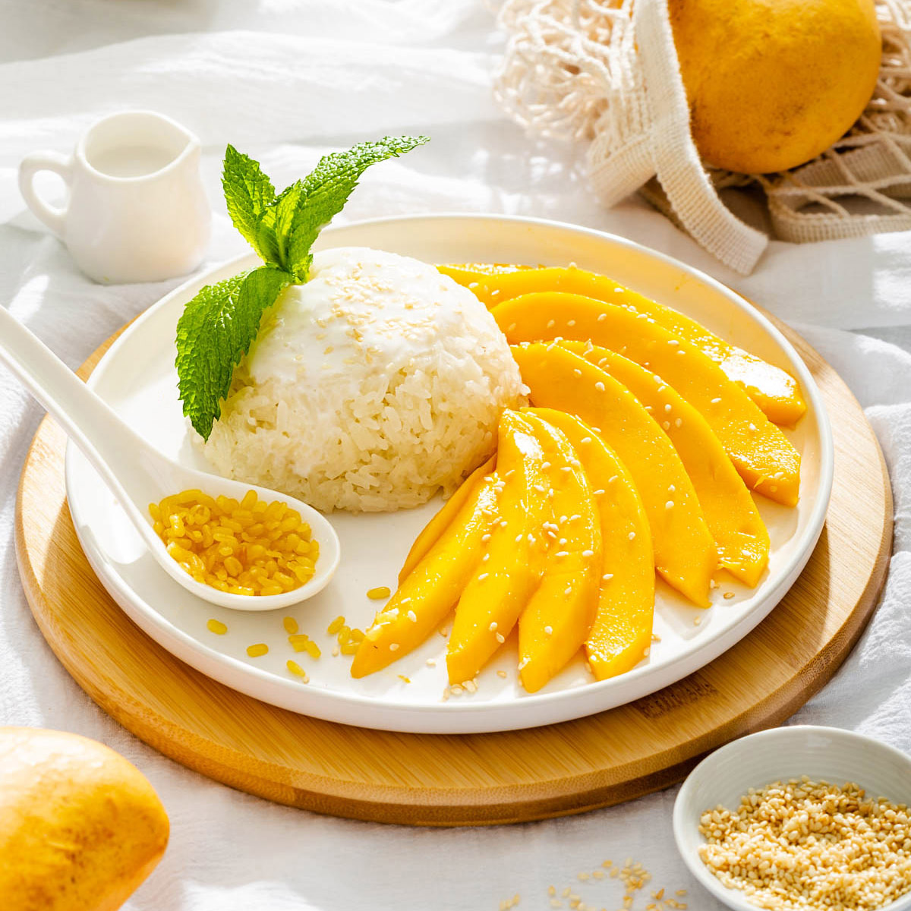
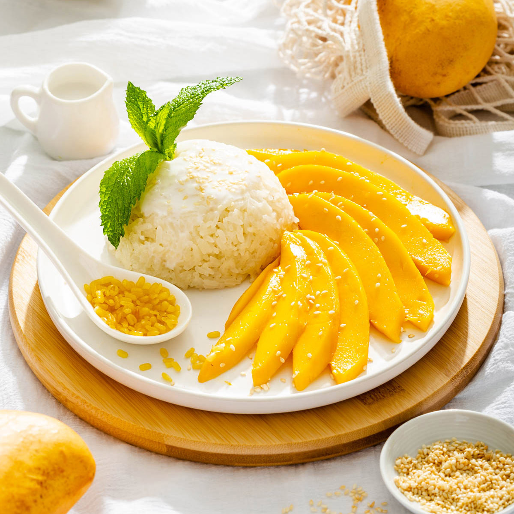

- Inicio
La cocina tailandesa es famosa por su balance de sabores dulces, salados, ácidos y picantes.
Cada platillo es una experiencia única.
- Nosotros
Somos un restaurante familiar que trae los auténticos sabores de Tailandia directamente a tu mesa.
- Servicio
Ofrecemos servicio en el local, pedidos para llevar y catering para eventos especiales.
- Contacto
Email: contacto@saborestailandia.com
Teléfono: +34 123 456 789

Platos Populares
🥢 Pad Thai – El alma de la calle tailandesa
Un plato icónico salteado al wok que combina fideos de arroz con camarones, tofu, huevo y brotes de soja.
Realzado con una mezcla dulce, ácida y salada de tamarindo, azúcar de palma y salsa de pescado.
Terminado con cacahuates triturados y un toque de lima. Es el equilibrio perfecto en cada bocado.
🌶️ Tom Yum – Sopa picante con alma cítrica
Una sopa tradicional tailandesa famosa por su sabor vibrante y exótico.
El Tom Yum mezcla galanga, hojas de lima kaffir, lemongrass, chile y jugo de lima,
todo infusionado en un caldo claro o cremoso con camarones. Refrescante, picante y profundamente aromático.
🍛 Green Curry – Calidez cremosa con un toque de fuego
Un curry suave pero picante elaborado con leche de coco, pasta de curry verde, albahaca tailandesa,
berenjenas y carne de pollo o tofu. Su color vibrante y sabor complejo hacen de este plato
una experiencia rica y reconfortante.
 
